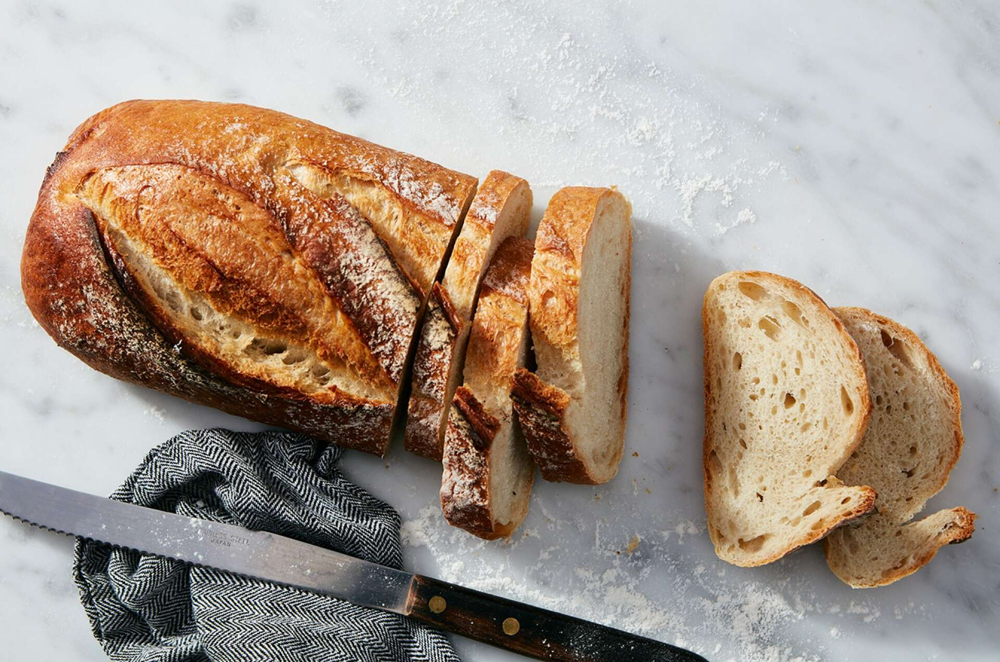

Sourdough Bread

Description
The following recipe will guide you on how to prepare your first batch of sourdough bread dough
Ingredients
- 150g/ 5.35 oz bubbly, active sourdough starter
- 250g/ 8.80 oz warm water, preferably filtered*
- 25g/ .90 oz olive oil
- 500g/ 17.65 oz bread flour (not all purpose flour)
- 10g/ .4 oz fine sea salt
- fine ground cornmeal, for dusting
- **You will need a 5 1/2 or 6 quart Dutch oven for baking
Steps
- Whisk the starter, water, and olive oil in a large bowl
- Add the flour and salt
- Mix everything together with your hands until all of the flour is absorbed. The dough will be dry and shaggy
- Cover the bowl with plastic wrap, reusable wrap or a clean, very damp kitchen towel. Let rest (autolyse) for 30 minutes or up to 1 hour, if preferred
- After the dough has rested, work the dough in the bowl into a rough ball, about 15 seconds
- Cover the bowl with wrap or a very damp kitchen cloth. Let rest in a warm spot to rise. The dough is ready when it no longer looks dense and has doubled in size. This can take anywhere from 3-12 hours depending on the temperature of your ingredients, the potency of your starter and surrounding environment
- During bulk rise, you have the option to perform a series of ‘stretch & folds’ to strengthen the dough. Start 30 minutes into the bulk rise. Gather a portion of the dough, stretch it upwards and then fold it over itself. Rotate the bowl ¼ turn and repeat this process until you have come full circle to complete 1 set. Do this once or twice spaced about an hour apart. Although this step is not mandatory, it will increase the total volume and height of your bread